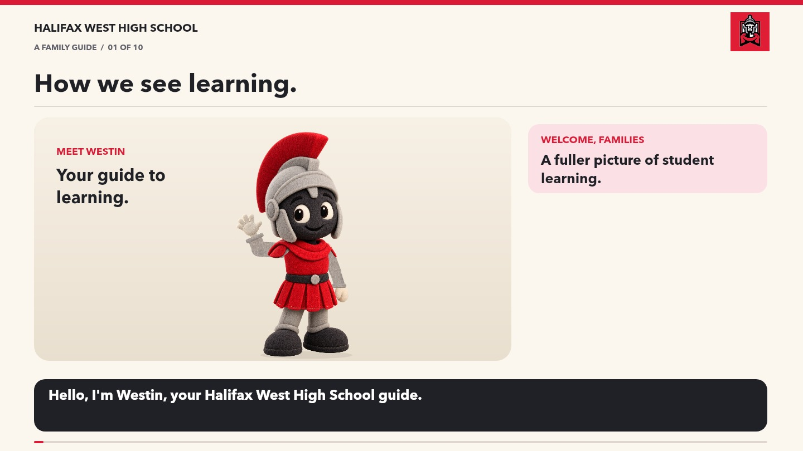

Product
Work students create or complete: tests, assignments, projects, presentations, and more.

EVERY SUBJECT. A FULLER PICTURE.
Join Westin for a family guide to what students create, explain, and do—and how teachers use that evidence.

Reduced motion is on: listen to the narration with still chapter illustrations.
The media could not load. Read the full transcript below.
TWO DIFFERENT QUESTIONS
Work students create or complete: tests, assignments, projects, presentations, and more.
Students explain their thinking through discussions, conferences, interviews, or reflections.
Students demonstrate skills, processes, and learning: for example, laboratory technique or movement skills in physical education.
Assessment used to provide feedback and guide next steps. Students use feedback to practise, revise, and improve.
Assessment used to evaluate learning against established criteria. It can use products, conversations, or observations.
P, C, and O describe evidence types. They do not automatically create three equally weighted parts of a grade.
READING A POWERSCHOOL TITLE
A summative conversation about understanding a text. These are illustrative titles; read the description and teacher feedback for the specific learning being assessed.
COMPLETION AND UNDERSTANDING
Submitted work may still need improvement. Some classroom practice may not appear as a separate PowerSchool entry. Your teacher can explain where to find daily tasks and how to follow up on missing work.
What are you learning?
What feedback have you received?
What is your next step?
Hello, I'm Westin, your Halifax West High School guide. In every subject, students show learning through what they create, explain, and do. Here is how to read that learning in PowerSchool.
We begin with clear learning goals and success criteria. In math, English, science, physical education, and beyond, we ask: what does the student understand, and what can they do?
P stands for product: work a student creates or completes. A math solution, an essay, a test, or a lab report can show learning. The finished work is one part of the picture.
C stands for conversation: students explaining their thinking. They might explain a strategy, support an interpretation, or discuss a scientific result. Teachers listen for understanding against the learning criteria.
O stands for observation: skills and learning demonstrated in action. In biology, that could be focusing a microscope; in physical education, controlling a dribble or applying a movement skill. Teachers look for the technique and understanding connected to the learning goal.
FORM means formative: assessment used to provide feedback and guide next steps. Students use that feedback to practise, revise, and improve. It helps answer: what should I work on next?
SUM means summative: assessment used to evaluate learning against established criteria. Products, conversations, and observations can serve either purpose. These evidence types are not three equal shares of a grade.
In PowerSchool, the first letter identifies the evidence type. FORM or SUM identifies the purpose, followed by a clear assignment title. For example: C, SUM, explaining a literary interpretation, means a summative conversation about understanding a text.
Completion and understanding tell us different things. Check assignment status alongside feedback: submitted work may still need improvement. Some classroom practice may not appear as a separate PowerSchool entry. Your teacher can explain where to find daily tasks and how to follow up on missing work.
At home, ask: what are you learning? What feedback have you received? What is your next step? If an entry is unclear, connect with the teacher. Together, we can support the next step in learning.